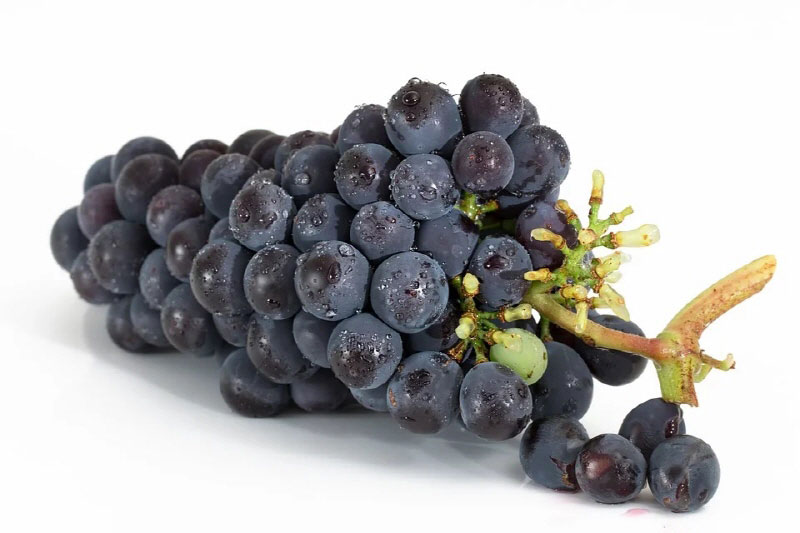

반려견을 지켜요! 꼭 피해야 할 음식 6가지!
사람도 먹으면 안 되는 음식이 있습니다. 알레르기가 있는 경우죠. 아주 미미한 증상이 있는가 하면 심각한 경우에는 일상에 무리를 주거나 발작을 일으키는 등의 증상이 나타나기도 합니다. 반려견도 마찬가집니다. 먹어서는 안 되는 음식을 대량 먹었을 때 소중한 반려견의 생명을 단축하거나 또는 장기의 이상을 불러올 수 있습니다. 내 가족을 지키는 일! 당연히 반려견을 키우는 분이라면 알아야 할 상식이겠죠?
포도는 반려견이 꼭 피해야 할 음식 중 하나입니다. 달콤한 맛을 내는 포도, 맛도 좋고 영양도 좋은 만큼 반려견에게도 도움이 될 수 있는 음식이라 생각하겠지만 아닙니다! 포도는 소량만 섭취해도 신장 기능에 무리를 가져오고 기능 이상을 발생시킬 수 있습니다. 무기력증, 호흡곤란, 급성 신부전증 등 갑작스러운 증상이 나타날 수 있는 만큼 반드시 피해야 할 음식 중 하나입니다. 포도, 건포도 모두 해당하는 사항이니 유념하시길 바랍니다.
반려견을 키우는 분들에게는 반드시 피해야 할 음식 중 하나로 상식 같은 음식이죠. 초콜릿은 카페인, 테오브로민이 들어있는데 이 성분들은 메칠키산친이라는 성분을 함유하고 있어요. 이 성분은 구토, 복통, 근육 경련, 비정상적인 심장 박동 등을 일으켜 다량 섭취한 경우에는 죽게 만들 수도 있어 항시 주의가 필요한 음식입니다.
매운 양파는 사람도 울리죠? 양파로 인해 반려견이 우는 것은 물론, 적혈구를 파괴해 활동성을 크게 약화할 수 있습니다. 다량 섭취한 경우에는 혈액 수혈이 필요하게 되고, 제대로 수혈이 되지 않을 때에는 생명의 위험을 다투는 상황이 발생할 수 있습니다. 또, 중독 증세를 일으킬 수 있어 주변에 양파는 두는 일이 없어야겠죠?
견과류 역시 반려견이 먹어서는 안되는 대표적인 음식입니다. 견과류는 소화기관 및 신경조직, 근육에 영향을 미치는데요. 독성 반응을 일으켜 신경을 마비시키고 심한면 근육을 쓰지 못해 몸을 움직이지 못하는 상황이 발생할 수 있습니다.
사과, 복숭아, 자두, 아보카도 등 다양한 과일이 있죠. 사람에게도 건강하니 당연히 반려견에게도 좋을거라는 생각은 금물! 먹어도 되는 부위가 있고 그렇지 않은 부위가 있는데요. 사과, 파인애플, 바나나, 딸기, 감귤 등 다양한 제철 과일을 소량 먹는 것은 좋습니다. 하지만, 앞서 설명한 과일의 씨는 반려견에게 치명적일 수 있습니다. 사과 속, 씨앗이 있는 부분은 시안배당체라고 하는 청산가리 성분이 들어 있어 심하면 쇼크사가 올 수 있습니다.
사람과 비슷한 식성을 가진 부분도 있죠! 하지만 차이점이 큰 예도 있기 때문에 반려견이 좋아하는 음식 그리고 반드시 피해야 할 음식 등을 구분하여 급여해 주신다면 반려견과 긴 시간을 소중히 이어갈 수 있을 것입니다!
[출처] 반려견을 지켜요! 꼭 피해야 할 음식 6가지! | 작성자 쭈딩쭈딩